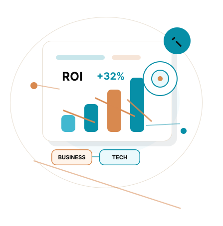
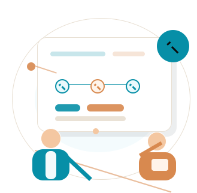

Développeur Web Full Stack
Développeur Freelance Full Stack polyvalent, je crée des solutions digitales performantes en combinant mon expertise PC SOFT et les technologies web modernes.

Une vision business et une expertise technique
-
Vision business & ROI garanti
Une approche stratégique pour maximiser vos investissements.
-
Expérience entrepreneuriale
25 ans d'expérience entrepreneuriale et managériale.
-
Expertise complète
PC SOFT, WEBDEV, WINDEV Mobile et technologies web modernes.
Pourquoi me choisir
J'allie expertise technique approfondie et vision business pour créer des solutions digitales rentables et pérennes.
-
Double expertise PC SOFT & Full Stack
Maîtrise approfondie des environnements web et PC SOFT.
-
Vision business & ROI garanti
Une approche pragmatique, orientée résultats.
-
Accompagnement complet
De la conception au déploiement, je vous accompagne à chaque étape.

Travaillons ensemble sur votre prochain projet
Vous avez un projet en tête ?
Discutons-en ensemble et créons quelque chose d'exceptionnel.